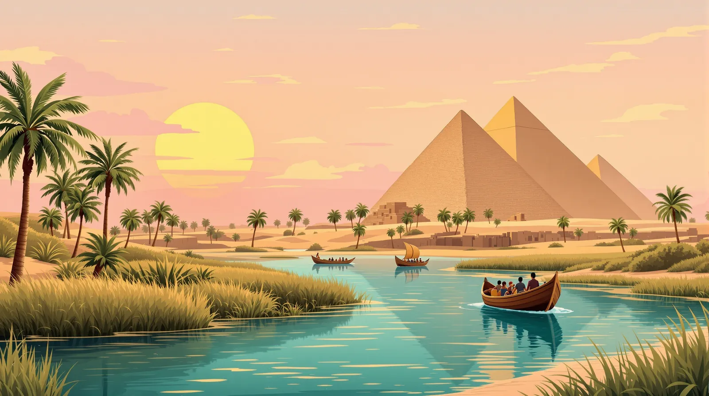
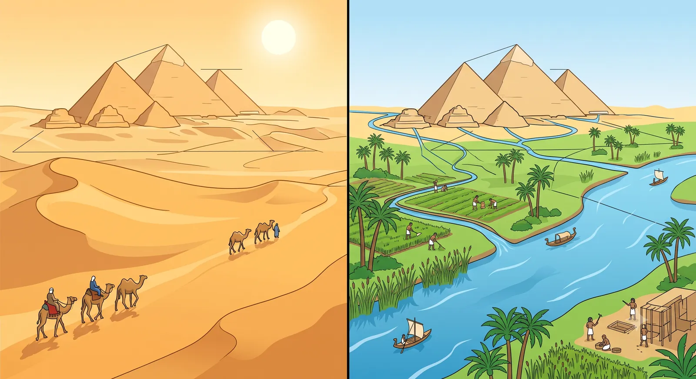
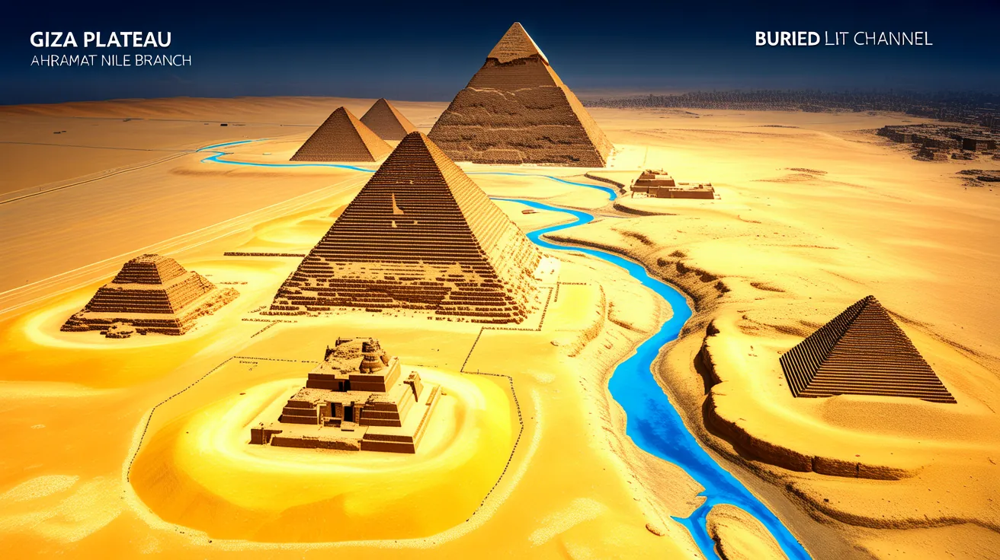
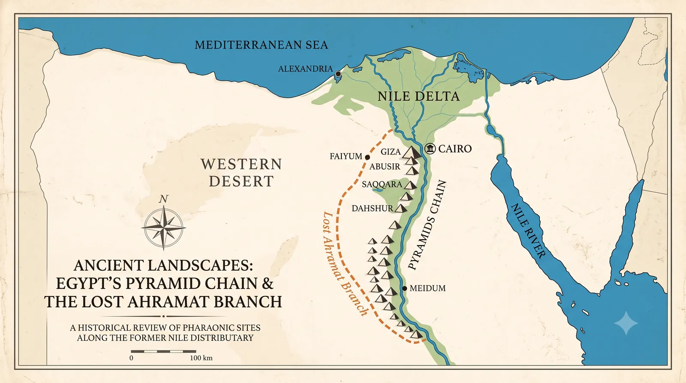
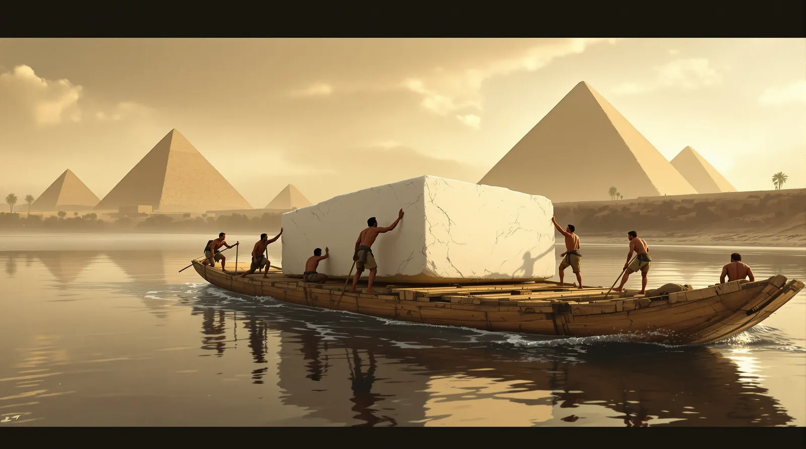
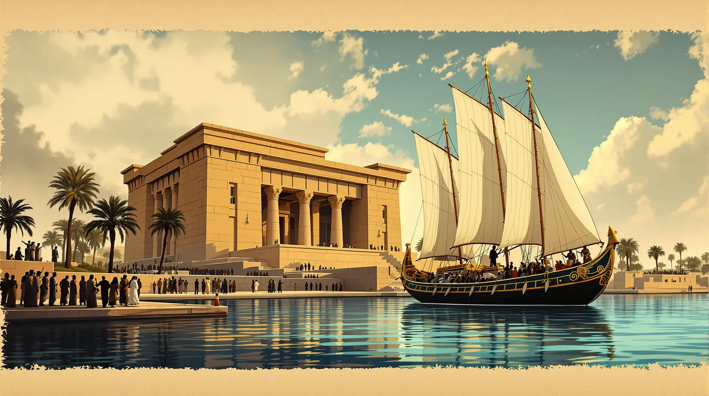
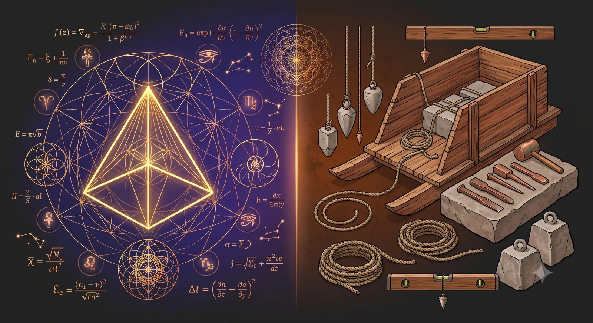
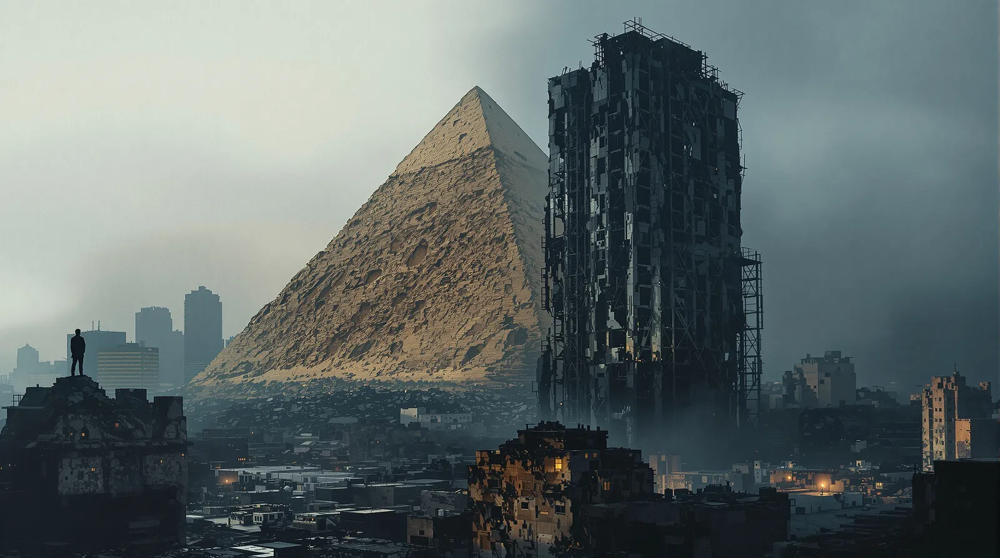

Le secret des bâtisseurs : Comment la découverte d’une branche perdue du Nil réécrit l’histoire des pyramides

Le secret des bâtisseurs : Comment la découverte d’une branche perdue du Nil réécrit l’histoire des pyramides
El secreto de los constructores: Cómo el descubrimiento de un brazo perdido del Nilo reescribe la historia de las Pirámides
The Builders' Secret: How the Discovery of a Lost Nile Branch Rewrites the History of the Pyramids
Tags: Égypte ancienne, Climat, Technologie
Le canal d'Ahramat coulant près des pyramides
Etiquetas: Egipto antiguo, Clima, Tecnología
El canal Ahramat fluyendo junto a las pirámides
Tags: Ancient Egypt, Climate, Technology
The Ahramat canal flowing next to the pyramids
1. Introduction : L’énigme du désert
1. Introducción: El enigma del desierto
1. Introduction: The Riddle of the Desert
Pourquoi 31 pyramides, dont les légendaires monuments de Gizeh, s’alignent-elles avec une précision chirurgicale le long d’une bande de terre aride, loin du Nil actuel ? Depuis des millénaires, cet alignement mystérieux alimente les spéculations les plus audacieuses : bâtisseurs extraterrestres, civilisations disparues, ou savoirs perdus. Pourtant, la réponse est bien terrestre… et bien plus ingénieuse.
¿Por qué 31 pirámides, incluyendo los íconos eternos de la meseta de Guiza, están hoy alineadas con precisión quirúrgica a lo largo de una franja de tierra árida e inhóspita? Hasta ahora, la ubicación de estos monumentos, concentrados entre Guiza y Lisht, constituía una de las mayores paradojas de la arqueología. Estas estructuras colosales parecían haber sido levantadas en medio de la nada, lejos de las orillas fértiles del Nilo actual.
Why are 31 pyramids, including the eternal icons of the Giza plateau, aligned with surgical precision today along a strip of dry and inhospitable land? Until now, the location of these monuments, concentrated between Giza and Lisht, constituted one of archaeology's greatest paradoxes. These colossal structures seemed to have been placed in the middle of nowhere, far from the fertile banks of the modern Nile.

Le paradoxe des pyramides isolées dans le désert
L’explication ne relève ni du hasard ni de la magie, mais d’une symbiose parfaite entre la géographie ancienne et l’ambition architecturale. La découverte de la branche Ahramat — un bras du Nil aujourd’hui enseveli sous le désert — lève enfin le voile sur ce puzzle millénaire. Elle révèle que les bâtisseurs n’ont pas seulement dompté la pierre : ils ont aussi exploité une autoroute fluviale aujourd’hui effacée par les sables.
Sin embargo, la explicación de esta hazaña no se debe al azar ni a la magia, sino a una profunda simbiosis entre la geografía antigua y la ambición arquitectónica. El descubrimiento del brazo "Ahramat", una arteria fluvial desaparecida, es la pieza clave que completa este rompecabezas milenario. Nos revela que los constructores de pirámides no solo dominaron la piedra, sino que también supieron aprovechar una autopista acuática hoy borrada por las arenas del desierto.
Yet the explanation for this feat is neither chance nor magic, but a deep symbiosis between ancient geography and architectural ambition. The discovery of the "Ahramat" branch, a vanished river artery, is the key piece that completes this ancient puzzle. It reveals that the pyramid builders did not just tame stone, but also knew how to exploit a water highway now erased by the desert sands.
2. La branche Ahramat : Une autoroute fluviale cachée sous le sable
2. El Brazo Ahramat: Una autopista fluvial oculta bajo la arena
2. The Ahramat Branch: A River Highway Hidden Under the Sand
Le nom « Ahramat », qui signifie « pyramides » en arabe, n’est pas un hasard. Cette voie d’eau, identifiée par l’équipe internationale de la professeure Eman Ghoneim (Université de Caroline du Nord à Wilmington), a été localisée grâce à une technologie de pointe : l’imagerie satellite radar, capable de « voir » à travers les couches de sable pour cartographier les lits fluviaux enfouis. Des sondages géophysiques et des carottages de sédiments ont confirmé son existence sur le terrain.
El nombre "Ahramat", que significa "pirámides" en árabe, rinde homenaje a la función histórica de esta vía fluvial identificada por el equipo internacional de la profesora Eman Ghoneim (Universidad de Carolina del Norte en Wilmington). Gracias a las imágenes de satélite por radar, los investigadores dispusieron de una verdadera "visión de rayos X" capaz de penetrar la superficie para cartografiar los cauces fluviales sepultados.
The name "Ahramat," which means "pyramids" in Arabic, pays tribute to the historical function of this waterway identified by the international team of Professor Eman Ghoneim (University of North Carolina Wilmington). Thanks to radar satellite imagery, researchers benefited from a true "X-ray vision" capable of penetrating the surface to map buried riverbeds.

Visualisation radar du canal enfoui d'Ahramat
Ses dimensions sont impressionnantes :
Longueur : 64 kilomètres, serpentant précisément au pied du plateau du désert occidental.
Largeur : entre 200 et 700 mètres (jusqu’à 1 kilomètre par endroits).
Profondeur : de 2 à 8 mètres (voire 25 mètres à certains points).
Esta estructura, confirmada en el terreno mediante sondeos geofísicos y perforaciones de sedimentos, presenta dimensiones impresionantes:
Longitud: 64 km.
Ancho: Entre 200 y 700 m.
Profundidad: De 2 a 8 m.
This structure, confirmed on the ground by geophysical surveys and sediment cores, features impressive dimensions:
Length: 64 km.
Width: Between 200 and 700 m.
Depth: From 2 to 8 m.

Carte explicative de l'alignement des pyramides et du canal
Il ne s’agissait pas d’un simple affluent mineur, mais d’une artère vitale, alignée avec une précision remarquable sur les nécropoles royales.
No se trataba de un simple afluente menor, sino de una arteria caudalosa cuyo trazado serpenteaba precisamente al pie de la meseta del desierto occidental, donde descansan las necrópolis reales.
It was not a simple minor tributary, but a powerful artery whose course wound precisely at the foot of the western desert plateau, where the royal necropolises lie.
3. Logistique monumentale : Transporter des montagnes sur l’eau
3. Logística monumental: Transportar montañas sobre el agua
3. Monumental Logistics: Transporting Mountains on Water
La branche Ahramat résout un cauchemar logistique : comment les Égyptiens ont-ils pu acheminer des millions de tonnes de calcaire et de granit, extraits de carrières situées parfois à des centaines de kilomètres ? Le transport terrestre sur le sable était impossible pour de telles charges. Le flottage sur le Nil était donc la seule solution viable.
El brazo Ahramat resuelve la pesadilla logística de los faraones: ¿cómo transportar millones de toneladas de piedra caliza y granito, extraídas de canteras situadas a veces a cientos de kilómetros al sur? El transporte fluvial por el Nilo era la única solución viable, ya que el transporte terrestre sobre la arena era técnicamente imposible para cargas tan pesadas.
The Ahramat branch solves the pharaohs' logistical nightmare: how to transport millions of tons of limestone and granite, extracted from quarries sometimes located hundreds of kilometers to the south? Floating on the Nile was the only viable solution, as land transport over sand was technically impossible for such heavy loads.

Transport de blocs de pierre sur des barges le long du Nil
Mieux encore : les archéologues ont découvert que les Égyptiens pratiquaient une « architecture adaptative ». L’emplacement des pyramides n’était pas figé :
Lorsque le débit de la branche Ahramat était élevé, les rois faisaient construire leurs monuments plus à l’ouest, sur les hauteurs.
Lorsque le niveau baissait, les chantiers se rapprochaient du lit du fleuve, à l’est, pour faciliter le déchargement.
Más fascinante aún, los arqueólogos descubrieron que los egipcios practicaban una "arquitectura adaptativa". La ubicación de las pirámides no estaba fija: cuando el caudal del brazo Ahramat era alto y el agua subía, los reyes mandaban construir sus monumentos más al oeste, en las tierras altas. En cambio, cuando el nivel bajaba, las obras se acercaban al cauce del río, al este, para facilitar la descarga.
Even more fascinating, archaeologists discovered that the Egyptians practiced "adaptive architecture." The location of the pyramids was not fixed: when the flow of the Ahramat branch was high and the water rose, the kings had their monuments built further west, on the heights. Conversely, when the level dropped, the construction sites moved closer to the riverbed, to the east, to facilitate unloading.
« Le Nil a été une ligne de vie dans un paysage largement aride. Il fournissait à la fois la subsistance et le transport facile des marchandises et des matériaux de construction. Pour cette raison, la plupart des villes et monuments clés se trouvaient à proximité immédiate de ses rives et de ses branches. »
— Eman Ghoneim
"El Nilo fue un hilo de vida en un paisaje en gran parte árido. Proporcionaba sustento y un transporte fácil para las mercancías y los materiales de construcción. Por ello, la mayoría de las ciudades y monumentos clave se encontraban en las inmediaciones de las orillas del Nilo y de sus brazos periféricos." — Eman Ghoneim
"The Nile was a lifeline in a largely arid landscape. It provided both sustenance and easy transport for goods and building materials. For this reason, most key cities and monuments were in immediate proximity to the banks of the Nile and its peripheral branches." — Eman Ghoneim
4. Au-delà de la pierre : Des ports pour le culte des pharaons
4. Más allá de la piedra: Puertos para el culto de los faraones
4. Beyond the Stone: Harbors for the Pharaohs' Cults
Un complexe funéraire égyptien était un ensemble rigoureux : la pyramide, le temple funéraire, la chaussée et le « temple de la vallée ». La découverte d’Ahramat donne enfin un sens physique à cette organisation. Les recherches montrent que les chaussées cérémonielles se terminaient perpendiculairement aux rives de cette branche disparue, transformant les temples de la vallée en vrais ports fluviaux.
Un complejo funerario egipcio es un conjunto riguroso: la pirámide, el templo funerario, la calzada y el "templo del valle". El descubrimiento de Ahramat le devuelve el sentido físico a esta estructura. Las investigaciones demuestran que las calzadas ceremoniales terminaban de forma perpendicular a las orillas de este brazo desaparecido, transformando los templos del valle en verdaderos puertos fluviales.
An Egyptian funerary complex is a strict assembly: the pyramid, the funerary temple, the causeway, and the "valley temple." The discovery of Ahramat gives physical meaning back to this structure. Research shows that the ceremonial causeways ended perpendicularly to the banks of this vanished branch, turning the valley temples into actual river ports.

Les temples de la vallée comme ports cérémoniels
Ces quais étaient les « décors construits » d’un spectacle rituel saisissant. Imaginez la flotte funéraire royale accostant au temple de la vallée : c’était le point d’entrée sacré pour le dernier voyage du pharaon. De là, d’immenses processions remontaient la chaussée pour conduire le corps vers sa demeure d’éternité, faisant du port la frontière entre le monde des vivants et celui des dieux.
Estos muelles eran los "escenarios construidos" (built props) de un espectáculo ritual impactante. Imaginen a la flota funeraria real atracando en el templo del valle: era el punto de entrada sagrado para el último viaje del faraón. Desde allí, inmensas procesiones subían por la calzada para trasladar el cuerpo hacia su morada eterna, convirtiendo al puerto en la frontera entre el mundo de los vivos y el de los dioses.
These docks were the "built props" of a striking ritual spectacle. Imagine the royal funerary fleet docking at the valley temple: it was the sacred entry point for the pharaoh's final journey. From there, immense processions climbed the causeway to lead the body toward its eternal resting place, making the port the boundary between the world of the living and that of the gods.
5. La disparition : Quand le climat redessine la carte
5. La desaparición: Cuando el clima redibuja el mapa
5. The Disappearance: When Climate Redraws the Map
Si cette branche fut le moteur de la civilisation, pourquoi a-t-elle disparu ? La fin de la « Période Humide Africaine » (vers 3000 av. J.-C.) a marqué le début d’une aridification brutale. À cette époque, les précipitations oscillaient entre 300 et 920 mm par an… contre 0,5 mm aujourd’hui.
Si este brazo fue el motor de la civilización, ¿por qué terminó secándose? El final del "Periodo Húmedo Africano" (hacia el 3000 a.C.) marcó el inicio de una desertificación brutal. El contraste es impactante: en aquella época, las precipitaciones oscilaban entre 300 y 920 mm al año, frente a los escasos 0.5 mm de la actualidad.
If this branch was the engine of the civilization, why did it end up disappearing? The end of the "African Humid Period" (around 3000 BC) marked the beginning of a brutal aridification. The contrast is striking: at that time, rainfall oscillated between 300 and 920 mm per year, compared to barely 0.5 mm today.
La désertification et l'assèchement du canal d'Ahramat
Plusieurs facteurs ont scellé son sort :
Ensablement massif : des tempêtes de sable répétées ont comblé le lit du fleuve. À Memphis, des carottages ont révélé jusqu’à 3 mètres de sable accumulés au-dessus des sédiments fluviaux.
Migration du Nil : le fleuve principal s’est déplacé vers l’est à un rythme de 2 à 3 kilomètres par millénaire.
Tectonique : une activité sismique sur les failles locales a provoqué un basculement du terrain vers le nord-est, asséchant progressivement la branche.
Varios factores geológicos y climáticos sellaron el destino de Ahramat:
Acumulación masiva de arena: Tormentas de arena repetidas obstruyeron el cauce del río. En Menfis, las perforaciones revelaron hasta 3 metros de arena acumulada sobre los sedimentos fluviales.
Migración del Nilo: El cauce principal del río se desplazó hacia el este a un ritmo de 2 a 3 kilómetros por milenio.
Tectónica: La actividad sísmica en las fallas locales provocó una inclinación del terreno hacia el noreste, secando gradualmente el brazo.
Several geological and climatic factors sealed Ahramat's fate:
Massive silting: Repeated sandstorms filled the riverbed. In Memphis, core samples revealed up to 3 meters of sand accumulated above the river sediments.
Migration of the Nile: The main river shifted eastward at a rate of 2 to 3 kilometers per millennium.
Tectonics: Seismic activity on local faults caused a tilt of the terrain toward the northeast, gradually aridification">drying up the branch.
Ce processus s’est achevé durant le Nouvel Empire (vers 1550–1070 av. J.-C.), laissant les pyramides isolées dans l’immensité du désert.
Este proceso concluyó durante el Imperio Nuevo (hacia 1550-1070 a.C.), dejando a las pirámides aisladas en la inmensidad del desierto.
This process was completed during the New Kingdom (around 1550-1070 BC), leaving the pyramids isolated in the vastness of the desert.
6. Science contre fantaisie : L’importance du debunking rationnel
6. Ciencia contra Fantasía: La importancia del desmantelamiento racional
6. Science vs. Fantasy: The Importance of Rational Debunking
La découverte de la branche Ahramat illustre la puissance de l’archéologie moderne. Là où l’archéologie « romantique » et les théories ésotériques invoquent des interventions mystérieuses pour expliquer le transport des pierres, la science propose une solution plus élégante : une infrastructure naturelle, stratégiquement exploitée.
El descubrimiento del brazo Ahramat ilustra el poder de la arqueología moderna. Mientras la arqueología "romántica" y las teorías esotéricas invocan intervenciones misteriosas para explicar el transporte de las piedras, la ciencia propone una solución más elegante: una infraestructura natural aprovechada estratégicamente.
The discovery of the Ahramat branch illustrates the power of modern archaeology. Where "romantic" archaeology and esoteric theories invoke mysterious interventions to explain the transport of stones, science proposes a more elegant solution: a natural infrastructure strategically exploited.

Méthodes d'ingénierie antiques contre théories ésotériques
Pourtant, comme le souligne l’historien Jean-Loïc Le Quellec, il ne s’agit pas seulement de « casser » des mythes. Ces théories fantastiques naissent d’un besoin humain d’émerveillement. Mais la réalité scientifique — celle de ces ingénieurs antiques capables d’adapter l’implantation de leurs monuments aux cycles hydrologiques d’un fleuve — est bien plus fascinante que n’importe quelle fable.
Sin embargo, no se trata solo de "romper" mitos. Como explican algunos historiadores, estas teorías fantásticas nacen de una necesidad humana de asombro ante los orígenes. Pero la realidad científica —la de estos ingenieros antiguos capaces de modificar la ubicación de sus monumentos según los ciclos hidrológicos de un río— es mucho más fascinante que cualquier fábula.
However, it is not just about "debunking" myths. As some historians explain, these fantastic theories are born from a human need for wonder about origins. But the scientific reality — that of these ancient engineers capable of modifying the location of their monuments according to the hydrological cycles of a river — is far more fascinating than any fable.
En intégrant les données environnementales, l’archéologie ne se contente plus d’étudier des objets : elle déchiffre enfin le comportement et l’intelligence d’une civilisation en symbiose avec son écosystème.
Al integrar los datos ambientales, la disciplina arqueológica no solo estudia objetos, sino que finalmente descifra el comportamiento y la inteligencia de una civilización en armonía con su ecosistema.
By integrating environmental data, the archaeological discipline does not just study objects, it finally deciphers the behavior and intelligence of a civilization in harmony with its ecosystem.
7. Conclusion : Un miroir pour notre avenir
7. Conclusión: Un espejo para nuestro futuro
7. Conclusion: A Mirror for Our Future
La branche Ahramat nous rappelle une vérité fondamentale : le destin des civilisations est indissociable de leur environnement. La puissance de l’Égypte ancienne reposait sur sa maîtrise d’un réseau fluviale complexe. Pourtant, malgré tout leur génie, les Égyptiens n’ont pu empêcher le sable d’effacer leur « autoroute » vitale.
El brazo Ahramat nos recuerda que el destino de las civilizaciones es inseparable de la geografía y el clima. El poder del antiguo Egipto residía en su dominio de una red fluvial compleja. Sin embargo, a pesar de todo su ingenio, los egipcios no pudieron evitar que la arena borrara su "autopista" vital.
The Ahramat branch reminds us that the fate of civilizations is inseparable from geography and climate. The power of ancient Egypt relied on its mastery of a complex river network. Yet, despite all their genius, the Egyptians could not prevent the sand from erasing their vital "highway."

Réflexion sur le destin de nos propres infrastructures
Cette découverte nous pose une question pressante. Dans un monde où nos infrastructures sont de plus en plus vulnérables aux changements climatiques, l’histoire d’Ahramat nous interpelle : Si un fleuve assez puissant pour porter des montagnes de pierre a pu disparaître de la mémoire humaine pendant trois millénaires… … que restera-t-il de nos propres « pyramides » de béton et d’acier dans trois mille ans ?
Este descubrimiento plantea una pregunta para nuestra propia modernidad. En un mundo donde nuestras infraestructuras son cada vez más vulnerables a los cambios ambientales, la historia de Ahramat nos cuestiona: si un río lo suficientemente caudaloso como para transportar montañas de piedra pudo desaparecer por completo de la memoria humana durante tres milenios, ¿qué quedará de nuestras propias pirámides de concreto y acero dentro de tres mil años?
This discovery poses a question to our own modernity. In a world where our infrastructure is increasingly vulnerable to environmental changes, the story of Ahramat challenges us: if a river powerful enough to carry mountains of stone could disappear completely from human memory for three millennia, what will remain of our own concrete and steel pyramids in three thousand years?
📚 Sources & Références Scientifiques
Ghoneim, E. et al. (2024).The Egyptian pyramid chain was built along the now abandoned Ahramat Nile Branch. Nature Communications Earth & Environment. [DOI: 10.1038/s43247-024-01379-7]
Tallet, P. (2017).Les papyrus de la mer Rouge I : Le journal de Merer (Papyrus Jarf A et B). Mémoires de l'IFAO.
Le Quellec, J.-L. (2018).L'Archéologie romantique : sens et vanité du debunking rationnel. Éditions CNRS.
Karbovnik, D. (2017).De l’alterscience au conspirationnisme : le cas de la pseudo-archéologie. Quaderni, 94.
📚 Fuentes & Referencias Científicas
Ghoneim, E. et al. (2024).The Egyptian pyramid chain was built along the now abandoned Ahramat Nile Branch. Nature Communications Earth & Environment. [DOI: 10.1038/s43247-024-01379-7]
Tallet, P. (2017).Les papyrus de la mer Rouge I : Le journal de Merer (Papyrus Jarf A et B). Mémoires de l'IFAO.
Le Quellec, J.-L. (2018).L'Archéologie romantique : sens et vanité du debunking rationnel. Éditions CNRS.
Karbovnik, D. (2017).De l’alterscience au conspirationnisme : le cas de la pseudo-archéologie. Quaderni, 94.
📚 Sources & Scientific References
Ghoneim, E. et al. (2024).The Egyptian pyramid chain was built along the now abandoned Ahramat Nile Branch. Nature Communications Earth & Environment. [DOI: 10.1038/s43247-024-01379-7]
Tallet, P. (2017).Les papyrus de la mer Rouge I : Le journal de Merer (Papyrus Jarf A et B). Mémoires de l'IFAO.
Le Quellec, J.-L. (2018).L'Archéologie romantique : sens et vanité du debunking rationnel. Éditions CNRS.
Karbovnik, D. (2017).De l’alterscience au conspirationnisme : le cas de la pseudo-archéologie. Quaderni, 94.